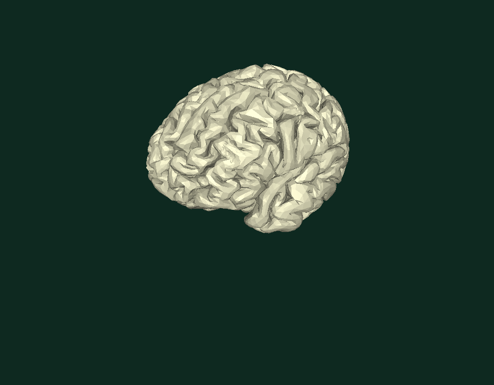

Brain surface.
A three-axis reference for localized measurements
INTERACTIVE 3D / BRAIN SURFACEDrag to rotate · Scroll to zoom

Explore the assembly
Other surfaces.
Each component can be inspected independently or in the combined anatomical viewer.

The website contains reduced-resolution display geometry rather than native CAD or original STL files.